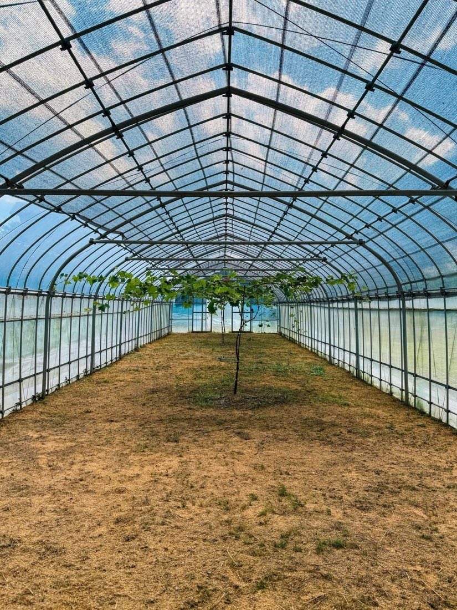
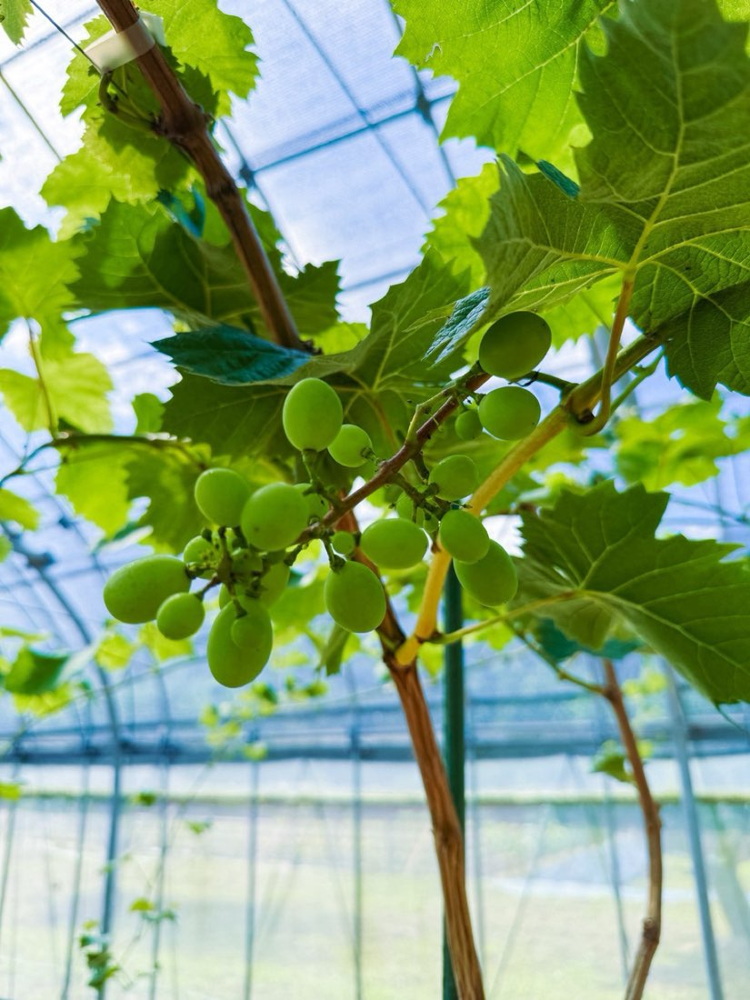
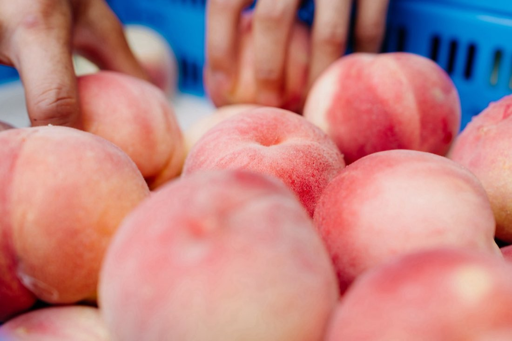
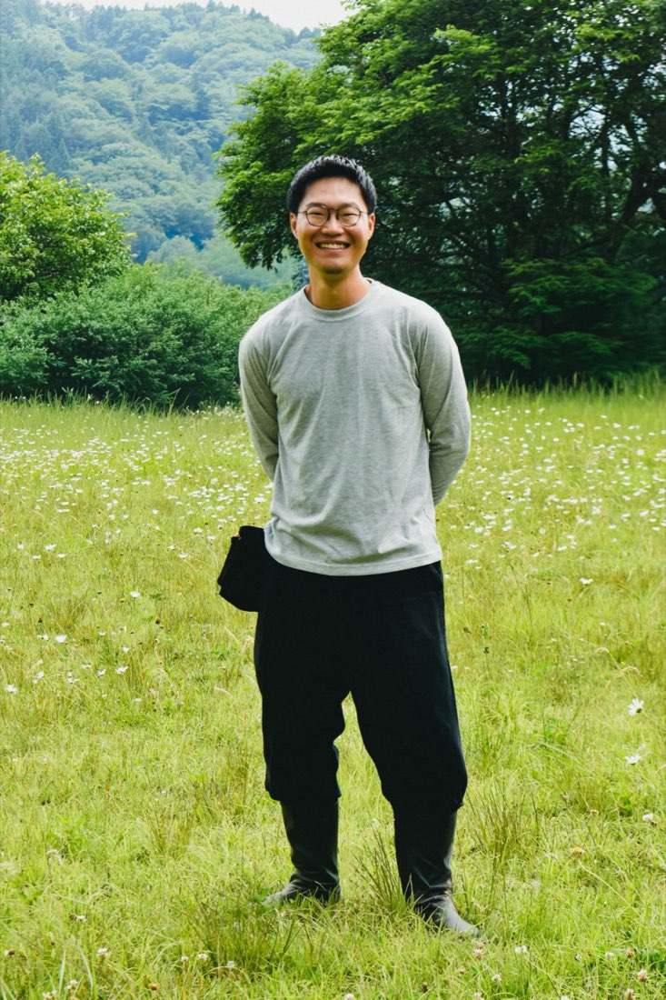

道志村でフルーツを育てるということ
こんにちは。フルーツ分野の地域おこし協力隊として活動している新井です。この春、道志村に着任してから、桃とシャインマスカットの栽培に向き合う毎日が始まりました。
これまで私は映像の仕事に携わってきましたが、ずっとやってみたかった農業に、道志村で挑戦できていることを、とてもありがたく感じています。




まずは畑に立ち、季節を知る
着任してからは、まず畑に立ち、土に触れ、季節の移り変わりを体で覚えることを大切にしてきました。研修先では、日々の管理や作業を通して、果物づくりの大変さと面白さを学んでいます。
ひとつの実が収穫を迎えるまでに、どれだけ多くの手間と判断が積み重なっているのか。畑で体を動かす中で、その重みを少しずつ実感しています。
ひとつの実が収穫を迎えるまでに、
どれだけの手間と判断が
積み重なっているのか。
道志村で初めて桃が実った夏
今年の夏、道の駅の裏にある観光農園では桃が順調に育ち、7月28日には収穫祭を行うことができました。実は、道志村で桃が収穫されたのは歴史上初めてのことです。
この一日には、単なる収穫以上の意味がありました。これまで難しいとされてきたこの土地で、実際に桃が育ち、収穫の日を迎えられた。その事実そのものに、大きな喜びと可能性を感じています。


フルーツ栽培がひらく、道志村の可能性
私は、道志村でのフルーツ栽培には、農業の新しい可能性があると感じています。桃やシャインマスカットを育てることそのものはもちろん、その先にある直売、体験、交流、発信まで含めて、道志村らしい果樹のかたちを育てていきたいと思っています。
村の自然や気候、人のあたたかさと結びついた果樹栽培は、きっと10年後、20年後の道志村につながる力になるはずです。

新しい当たり前をつくるために
まだ始まったばかりですが、この最初の一歩を大切にしながら、道志村でフルーツを育てる意味を、少しずつ形にしていきたいです。
果樹を育てることが、
特別な挑戦ではなく、
村の新しい当たり前になる未来へ。
これからは地域のみなさんともっと交流し、いろいろなお話を聞かせていただきながら、一歩ずつ進んでいきたいと思っています。どうぞよろしくお願いいたします。